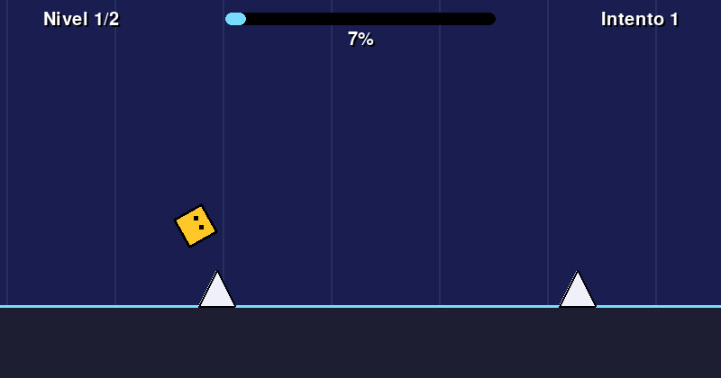

- Pinchos y bloques de frente te hacen explotar, y reinicias al tiro.
- Barra de porcentaje del nivel y contador de intentos.
- 2 niveles dibujados en texto que puedes editar.
- El fondo cambia de color según cuánto llevas del nivel.
Necesita: Python 3 + pygame · Linux, Windows y Mac
⬇ Descargar .zip (7 KB) 🎮 Jugar en el navegador▶️ Cómo jugar
- Descarga y descomprime el zip.
- Instala pygame:
pip install pygame - Corre
python3 salto.py(en Windows:python salto.py; en Linux/Mac también sirve./jugar.sh).
🎮 Controles
| ESPACIO | saltar (déjalo apretado para saltar apenas toques el suelo) |
| R | reiniciar el nivel |
| ESC | salir |
⌨️ Cambiar los controles
Abre controles.txt (está junto a salto.py) y cambia la tecla después del =. Así viene de fábrica:
saltar = space reiniciar = r salir = escape
Nombres válidos: letras (a, b...), flechas (up, down, left, right), space, return, tab, left shift, left ctrl y números. Si escribes una tecla que no existe, el juego avisa y usa la de siempre.
✏️ Haz tu propio nivel
Los niveles están en nivel1.txt y nivel2.txt (lista NIVELES arriba de salto.py). Son dibujos de texto: cada letra es un cuadrito.
# | bloque (te paras encima; de frente te mata) |
^ | pincho (te mata) |
. | nada |
Edita el dibujo, guarda, y corre: python3 salto.py
- La última fila es la que va pegada al piso. El nivel termina donde termina el texto.
- Un salto pasa por encima de hasta 3 pinchos seguidos.
- Puedes subirte a un bloque de 2 de alto, pero no a uno de 3 (salvo desde otro bloque).
- Si un pincho va encima de un bloque, escríbelo en la fila de arriba.
🔧 Para cambiar cómo se siente
Arriba de salto.py: VELOCIDAD, GRAVEDAD, SALTO, FONDO_INICIO y FONDO_FIN.